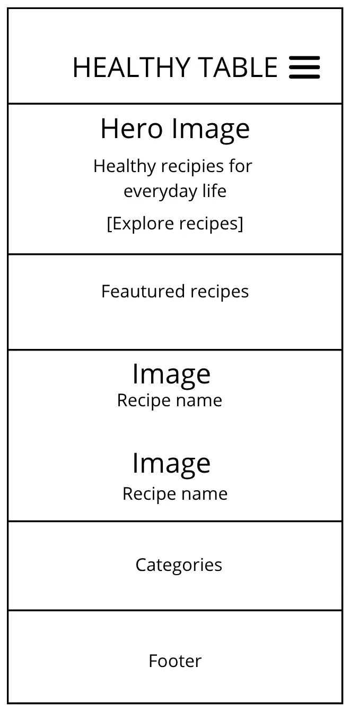
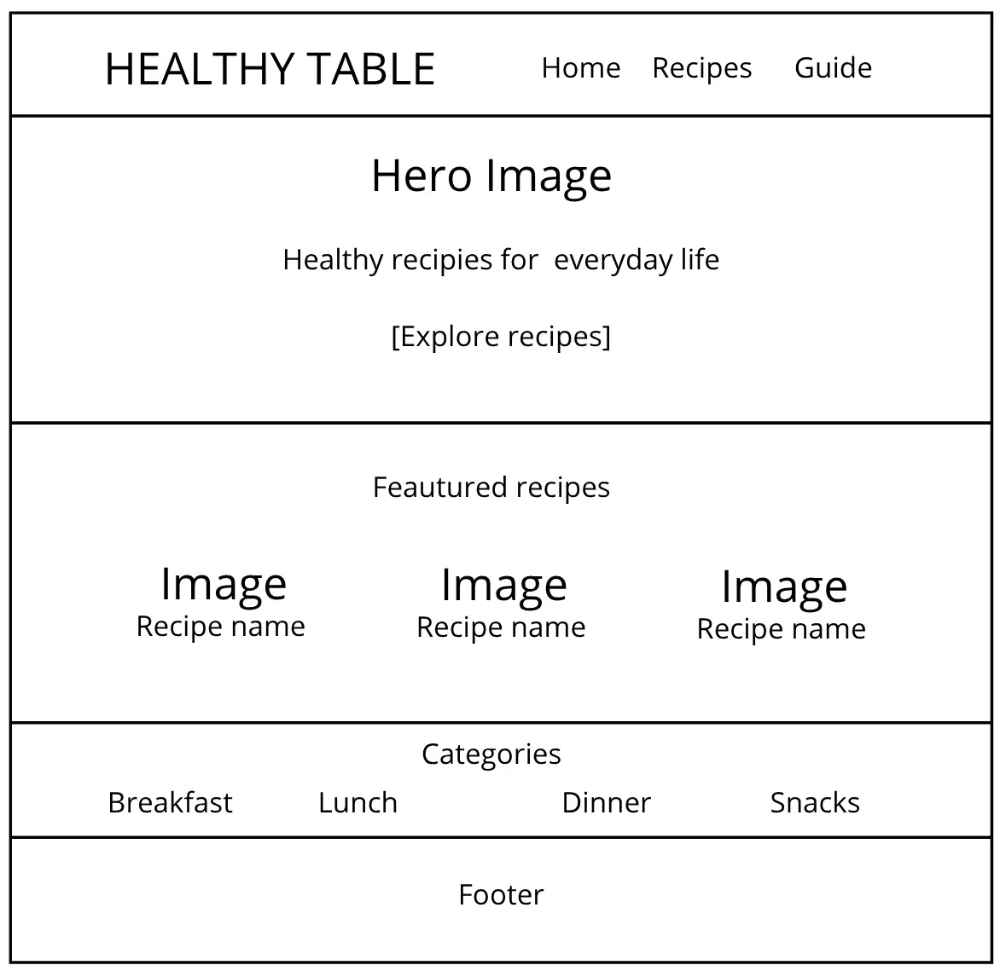

Site Name
Healthy Table
The name "Healthy Table" represents a website focused on simple, homemade recipes and a balanced approach to everyday cooking. The name was selected because it is short, easy to remember, and connects the idea of healthy food with sharing meals at the table.
Site Purpose
The purpose of Healthy Table is to provide a collection of homemade recipes for breakfast, lunch, dinner, and snacks. The site will provide ingredients, preparation instructions, cooking information, recipe categories, and practical kitchen tips. Visitors will be able to filter recipes, view detailed recipes, and save their favorite recipes for later.
Scenarios
- What can I cook for a healthy and simple breakfast?
- How can I find recipes that are quick to prepare after work?
- Where can I find the ingredients and preparation instructions for a recipe?
- How can I save my favorite recipes so I can find them later?
Color Scheme
Warm Cream - #F5F0E8
Main background color for the site and large content areas.
Deep Forest - #2F4F3E
Used for headings, main text, and the header.
Sage Green - #7A9E7E
Used for buttons, accents, borders, and decorative elements.
Soft Peach - #E8B7A5
Used for decorative details and warm visual accents.
White - #FFFFFF
Used for recipe cards and content areas to create visual contrast.
Typography
Fraunces
Used for the site name, main headings, section headings, and recipe titles. This serif font gives the site a warm, elegant, and distinctive visual style.
Inter
Used for body text, navigation, buttons, labels, descriptions, and form content. Its clean design provides good readability across different screen sizes.
Wireframes
Small View

Large View

Planned Features
- Recipe catalog with at least 15 recipes loaded from a JSON data sourcE, including properties such as name, category, preparation time, and difficulty.
- Recipe data retrieved using the Fetch API with asynchronous error handling.
- Recipe filtering by category.
- Recipe details displayed in an accessible modal dialog.
- Favorite recipes saved using local storage.
- Kitchen tips and preparation information.
- Recipe preference form with a form action page.
- Responsive navigation and layout for mobile and larger screens.